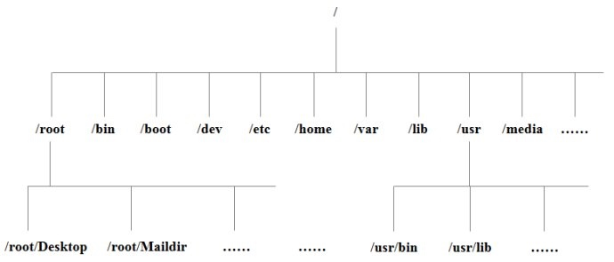

启动Linux系统后输入 ls \

以下是对这些目录的解释：
- /bin：bin是Binary的缩写, 这个目录存放着最经常使用的命令。
/boot：这里存放的是启动Linux时使用的一些核心文件，包括一些连接文件以及镜像文件。
/dev ：dev是Device(设备)的缩写, 该目录下存放的是Linux的外部设备，在Linux中访问设备的方式和访问文件的方式是相同的。
/etc：这个目录用来存放所有的系统管理所需要的配置文件和子目录。
/home：用户的主目录，在Linux中，每个用户都有一个自己的目录，一般该目录名是以用户的账号命名的。
/lib：这个目录里存放着系统最基本的动态连接共享库，其作用类似于Windows里的DLL文件。几乎所有的应用程序都需要用到这些共享库。
/lost+found：这个目录一般情况下是空的，当系统非法关机后，这里就存放了一些文件。
/media：linux系统会自动识别一些设备，例如U盘、光驱等等，当识别后，linux会把识别的设备挂载到这个目录下。
/mnt：系统提供该目录是为了让用户临时挂载别的文件系统的，我们可以将光驱挂载在/mnt/上，然后进入该目录就可以查看光驱里的内容了。
/opt：这是给主机额外安装软件所摆放的目录。比如你安装一个ORACLE数据库则就可以放到这个目录下。默认是空的。
/proc：这个目录是一个虚拟的目录，它是系统内存的映射，我们可以通过直接访问这个目录来获取系统信息。这个目录的内容不在硬盘上而是在内存里，我们也可以直接修改里面的某些文件，比如可以通过下面的命令来屏蔽主机的ping命令，使别人无法ping你的机器：
echo 1 > /proc/sys/net/ipv4/icmp_echo_ignore_all/root：该目录为系统管理员，也称作超级权限者的用户主目录。
/sbin：s就是Super User的意思，这里存放的是系统管理员使用的系统管理程序。
/selinux：这个目录是Redhat/CentOS所特有的目录，Selinux是一个安全机制，类似于windows的防火墙，但是这套机制比较复杂，这个目录就是存放selinux相关的文件的。
/srv：该目录存放一些服务启动之后需要提取的数据。
/sys：这是linux2.6内核的一个很大的变化。该目录下安装了2.6内核中新出现的一个文件系统 sysfs 。
- sysfs文件系统集成了下面3种文件系统的信息：针对进程信息的proc文件系统、针对设备的devfs文件系统以及针对伪终端的devpts文件系统。
- 该文件系统是内核设备树的一个直观反映。
- 当一个内核对象被创建的时候，对应的文件和目录也在内核对象子系统中被创建。
/tmp：这个目录是用来存放一些临时文件的。
/usr：这是一个非常重要的目录，用户的很多应用程序和文件都放在这个目录下，类似与windows下的program files目录。
/usr/bin：系统用户使用的应用程序。
/usr/sbin：超级用户使用的比较高级的管理程序和系统守护程序。
/usr/src：内核源代码默认的放置目录。
/var：这个目录中存放着在不断扩充着的东西，我们习惯将那些经常被修改的目录放在这个目录下。包括各种日志文件。
在linux系统中，有几个目录是比较重要的，平时需要注意不要误删除或者随意更改内部文件。
/etc： 上边也提到了，这个是系统中的配置文件，如果你更改了该目录下的某个文件可能会导致系统不能启动。
/bin, /sbin, /usr/bin, /usr/sbin: 这是系统预设的执行文件的放置目录，比如 ls 就是在/bin/ls 目录下的。
值得提出的是，/bin, /usr/bin 是给系统用户使用的指令（除root外的普通用户），而/sbin, /usr/sbin 则是给root使用的指令。
/var： 这是一个非常重要的目录，系统上跑了很多程序，那么每个程序都会有相应的日志产生，而这些日志就被记录到这个目录下，具体在/var/log 目录下，另外mail的预设放置也是在这里。
本文由 Sajor
创作，采用 知识共享署名4.0 国际许可协议进行许可
本站文章除注明转载/出处外，均为本站原创或翻译，转载前请务必署名
最后编辑时间为: 2022-01-06T11:46:28+08:00